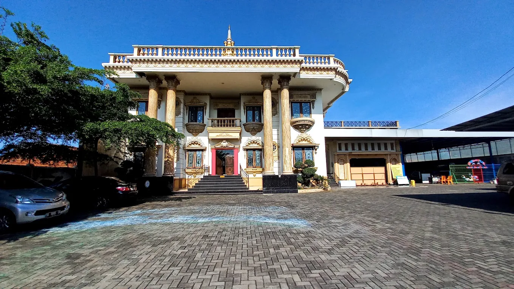

Mengenal Tirta Sentul Cilacap
Destinasi rekreasi air semi-indoor dan arena olahraga terpadu yang menghadirkan kenyamanan, keteduhan, serta kebersamaan keluarga di Kabupaten Cilacap.

Ikon Rekreasi Teduh & Megah di Cilacap
Tirta Sentul Cilacap hadir dengan konsep unik yang menggabungkan arena rekreasi air beratap kanopi sejuk dan gedung aula (*hall*) berarsitektur pilar klasik yang megah. Kami memahami kebutuhan masyarakat Cilacap akan tempat berenang yang bebas dari terik matahari langsung.
Dengan fasilitas yang terus dirawat secara berkala dan standar kebersihan air yang ketat, kami berkomitmen menjadi ruang publik yang aman untuk olahraga, edukasi renang, hingga acara spesial keluarga Anda.
Visi Kami
Menjadi kawasan rekreasi air dan fasilitas publik terdepan di Cilacap yang mengedepankan kenyamanan, keamanan, dan pelayanan ramah keluarga.
Misi Kami
- Menyediakan fasilitas kolam renang semi-indoor yang bersih, higienis, dan sejuk.
- Menyediakan venue hall berkapasitas besar untuk mendukung berbagai kegiatan masyarakat dan acara formal.
- Memberikan pelayanan terbaik dengan harga tiket yang terjangkau bagi seluruh lapisan masyarakat.
Nilai-Nilai Utama Kami
Komitmen yang selalu kami pegang teguh dalam melayani pengunjung Tirta Sentul Cilacap.
Kenyamanan Teduh
Atap pelindung kanopi memastikan pengunjung dapat berenang kapan saja tanpa perlu khawatir kepanasan atau kulit terbakar sinar matahari.
Standar Olahraga & Edukasi
Dilengkapi lintasan renang yang sesuai standar untuk latihan atlet, sekolah, maupun pembelajaran renang pemula.
Rekreasi Terjangkau
Menyajikan wahana rekreasi air yang lengkap dan venue acara terpadu dengan tiket masuk yang sangat bersahabat bagi keluarga.